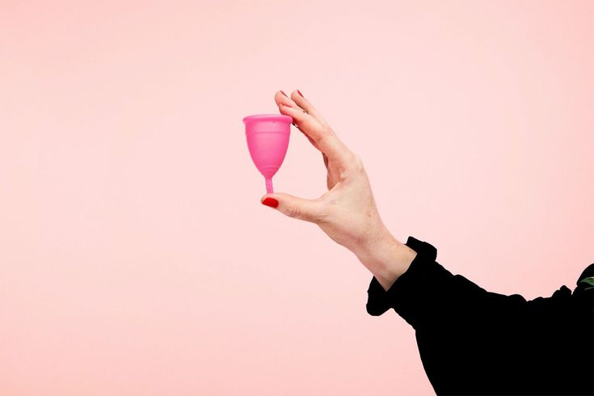

A menstrual cup is a reusable, flexible cup made of medical-grade silicone or rubber. Unlike traditional menstrual products, it collects menstrual flow instead of absorbing it. Menstrual cups are an eco-friendly and cost-effective alternative, as they can be reused for several years.
How to Use a Menstrual Cup?
- Wash your hands: Ensure proper hygiene before handling the cup.
- Fold the cup: Use a C-fold, punch-down fold, or any method that suits you.
- Insert the cup:
- Relax your muscles and gently insert the folded cup.
- Let the cup open inside, allowing it to form a seal against the vaginal walls.
- Check the seal: Lightly tug the cup’s stem to confirm it has fully opened.
- Wear for up to 12 hours: Remove it earlier if needed, depending on flow.
- Remove the cup:
- Pinch the base slightly to break the seal.
- Gently pull the cup out while keeping it upright to prevent spills.
- Empty and clean: Rinse with water after emptying and sterilize with boiling water at the end of each cycle.
Pros & Cons of Menstrual Cups
- ✔ Eco-friendly: Reusable for up to 10 years, reducing waste.
- ✔ Long wear time: Can be worn for up to 12 hours.
- ✖ Learning curve: Insertion and removal may take practice.
- ✖ Requires sterilization: Needs proper cleaning between cycles.